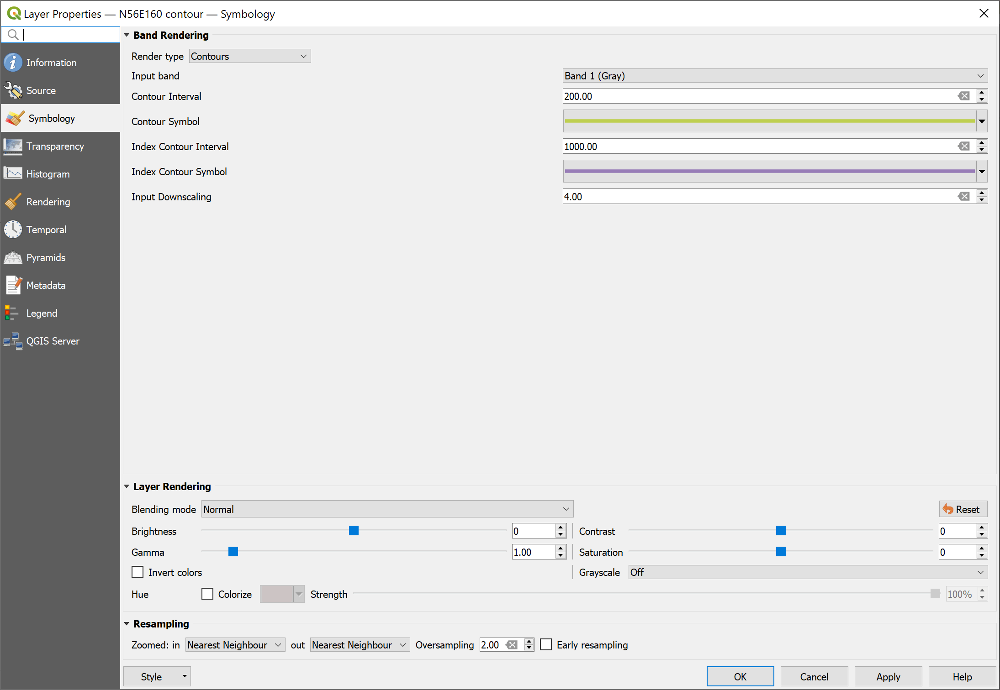
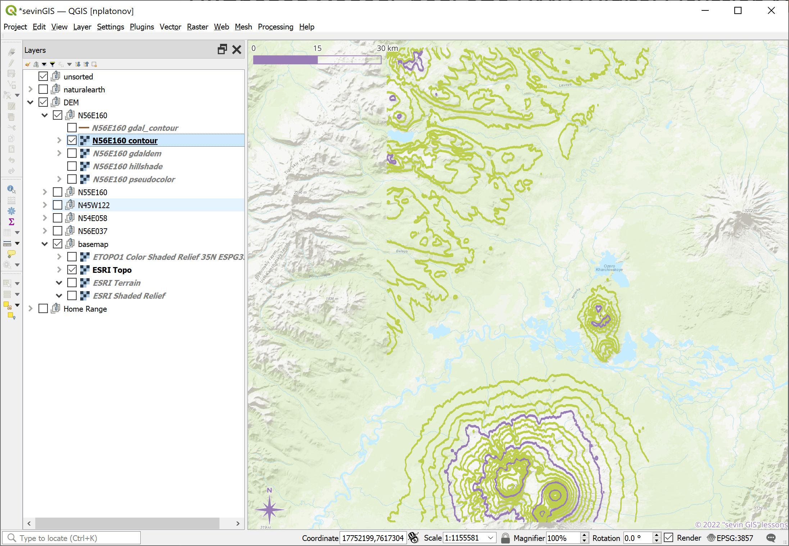
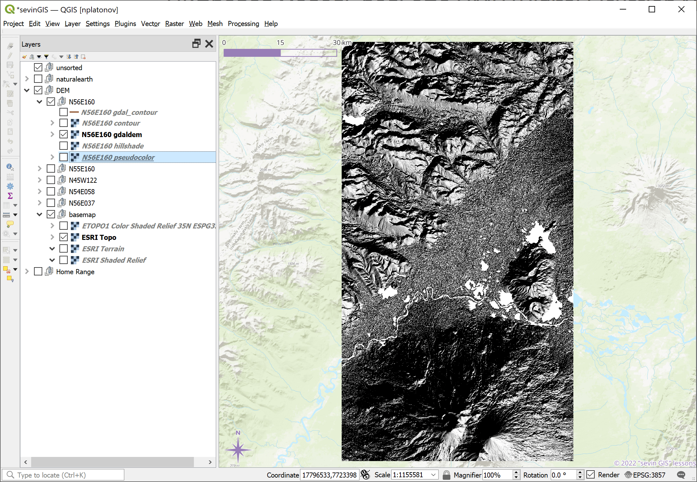

layout: true .banner[ .shorttitle[ [ГИС аспирантура](break.html#home) ] ] --- class: metadata customtitle middle left name: H32169 <iframe width='220' height='220' class='timenow' src='https://www.timeanddate.com/worldclock/fullscreen.html?n=1440' frameborder='0' allow='encrypted-media' allowfullscreen></iframe> .sidebar.left-column[ ## [Для картоосновы](#H82899) ## [Для визуализации](#H7932e) ## [Для проектов](#H90dce) ## [Геокодирование](#H8b616) ## [ЦМР](#H8e03b) ] .mainbar.right-column[ .author[Никита Платонов] .institute[с.н.с. ИПЭЭ РАН] .title[Пространственные данные: получение и обработка] .subtitle[ГИС технологии в биологических исследованиях] .what[Занятие 04] .where[] .when[ .updated[Обновлено: 2024-03-07 08:00]] ] --- name: H82899 .sidebar.left-column[ ## [Для картоосновы](#H82899).fg[].bg[] ### [Natural Earth](#H29603) ## [Для визуализации](#H7932e) ## [Для проектов](#H90dce) ## [Геокодирование](#H8b616) ## [ЦМР](#H8e03b) ] .mainbar.right-column[ Мы привыкли к картам в браузерах и в приложениях. Журналы выдвигают определенные требования к рисункам для повышения уровня восприятия информации + Копия экрана не удовлетворяет требованиям + Тайловые картографические web-сервисы, в основном, выдают данные экранного разрешения. Некоторые, как CartoDB, — с улучшенным (двухкратным), но и это не всегда дотягивает до требований + QGIS для Windows, вероятно, чувствителен к масштабу текста в параметрах ОС. Для оформления картографического мелкомасштабного и среднемасштабного материала есть данные в свободном доступе + Возможно, что-то будет лишь через VPN ] --- name: H29603 .sidebar.left-column[ ## [Для картоосновы](#H82899).fg[] ### [Natural Earth](#H29603).fg[].bg[] ## [Для визуализации](#H7932e) ## [Для проектов](#H90dce) ## [Геокодирование](#H8b616) ## [ЦМР](#H8e03b) ] .mainbar.right-column[ См. [Natural Earth World GIS Data](https://www.naturalearthdata.com/) <iframe src="https://www.naturalearthdata.com/downloads/" width="1330" height="480" data-external="1"></iframe> + Есть поддержка русскоязычных названий (см. поля "name_ru", "NAME_RU") ] --- class: notable middle inverse .note[ .pulling[ .pull-left-55.font90[ ## Домашнее задание на [22 февраля 2024 г.](index.html#deadline1) В QGIS на основе данных Natural Earth 1:10m cоздать картооснову, ориентируясь на территорию, охватывающую Карелию и Мурманскую области. Желательно включить административные границы, батиметрию и контуры высот. Экспортировать через Export Image или Print Layout два изображения, соответствующих русскоязычным журнальным требованиям, с различным пространственным охватом: 1) только Кольский п-ов, 2) вместе Карелия и Мурманская обл., 3) свой район работ для описания изучаемой территории в разделе «Методы» 4) свой район работ для использования в качестве подложки для «Результатов» ] .pull-right-45[ <img src="assets/lesson04/homework.png" width="1330" height="600" bound style="display: block; margin: auto;" /> ] ] ] --- name: H7932e .sidebar.left-column[ ## [Для картоосновы](#H82899) ## [Для визуализации](#H7932e).fg[] ### [QGIS <span class="hovertext" data-hover="QMS">QuickMapServices</span>](#H7932e).fg[].bg[] ## [Для проектов](#H90dce) ## [Геокодирование](#H8b616) ## [ЦМР](#H8e03b) ] .mainbar.right-column[ <img src="assets/lesson04/QMSsearch.png" width="1330" height="600" bound style="display: block; margin: auto;" /> ] --- name: H90dce .sidebar.left-column[ ## [Для картоосновы](#H82899) ## [Для визуализации](#H7932e) ## [Для проектов](#H90dce).fg[] ### [Global Elevation Map](#H90dce).fg[].bg[] ### [ESA Copernicus](#H488e5) ### [EO Browser](#Hf2b34) ### [EarthImages](#H32f04) ### [ASF](#H379a4) ### [Earthdata](#Hf460e) ### [Прибрежные данные](#H4a6fb) ### [OpenStreetMap](#osm) ### [Earth Engine](#Hd47f6) ## [Геокодирование](#H8b616) ## [ЦМР](#H8e03b) ] .mainbar.right-column[ Cм. [Global Elevation Map](https://gislounge.com/new-global-elevation-data-available-to-download-global-multi-resolution-terrain-elevation-data-2010/) <iframe src="https://www.gislounge.com/new-global-elevation-data-available-global-multi-resolution-terrain-elevation-data-2010/" width="1330" height="480" data-external="1"></iframe> Доступ через [USGS EarthExplorer](https://earthexplorer.usgs.gov/) (требуется регистрация) ] --- name: H488e5 .sidebar.left-column[ ## [Для картоосновы](#H82899) ## [Для визуализации](#H7932e) ## [Для проектов](#H90dce).fg[] ### [Global Elevation Map](#H90dce) ### [ESA Copernicus](#H488e5).fg[].bg[] ### [EO Browser](#Hf2b34) ### [EarthImages](#H32f04) ### [ASF](#H379a4) ### [Earthdata](#Hf460e) ### [Прибрежные данные](#H4a6fb) ### [OpenStreetMap](#osm) ### [Earth Engine](#Hd47f6) ## [Геокодирование](#H8b616) ## [ЦМР](#H8e03b) ] .mainbar.right-column[ См. [Copernicus Open Access Hub](https://scihub.copernicus.eu/dhus/#/home) <iframe src="https://scihub.copernicus.eu/" width="1330" height="480" data-external="1"></iframe> ] --- name: Hf2b34 .sidebar.left-column[ ## [Для картоосновы](#H82899) ## [Для визуализации](#H7932e) ## [Для проектов](#H90dce).fg[] ### [Global Elevation Map](#H90dce) ### [ESA Copernicus](#H488e5) ### [EO Browser](#Hf2b34).fg[].bg[] ### [EarthImages](#H32f04) ### [ASF](#H379a4) ### [Earthdata](#Hf460e) ### [Прибрежные данные](#H4a6fb) ### [OpenStreetMap](#osm) ### [Earth Engine](#Hd47f6) ## [Геокодирование](#H8b616) ## [ЦМР](#H8e03b) ] .mainbar.right-column[ См. [Sentinel Hub EO Browser](https://apps.sentinel-hub.com/eo-browser) <iframe src="https://apps.sentinel-hub.com/eo-browser" width="1330" height="480" data-external="1"></iframe> ] --- name: H32f04 .sidebar.left-column[ ## [Для картоосновы](#H82899) ## [Для визуализации](#H7932e) ## [Для проектов](#H90dce).fg[] ### [Global Elevation Map](#H90dce) ### [ESA Copernicus](#H488e5) ### [EO Browser](#Hf2b34) ### [EarthImages](#H32f04).fg[].bg[] ### [ASF](#H379a4) ### [Earthdata](#Hf460e) ### [Прибрежные данные](#H4a6fb) ### [OpenStreetMap](#osm) ### [Earth Engine](#Hd47f6) ## [Геокодирование](#H8b616) ## [ЦМР](#H8e03b) ] .mainbar.right-column[ См. [Geocento EarthImages](https://imagery.geocento.com/) Сервис с простым и удобным интерфейсом для поиска ДДЗ. <iframe src="https://imagery.geocento.com/" width="1330" height="480" data-external="1"></iframe> ] --- name: H379a4 .sidebar.left-column[ ## [Для картоосновы](#H82899) ## [Для визуализации](#H7932e) ## [Для проектов](#H90dce).fg[] ### [Global Elevation Map](#H90dce) ### [ESA Copernicus](#H488e5) ### [EO Browser](#Hf2b34) ### [EarthImages](#H32f04) ### [ASF](#H379a4).fg[].bg[] ### [Earthdata](#Hf460e) ### [Прибрежные данные](#H4a6fb) ### [OpenStreetMap](#osm) ### [Earth Engine](#Hd47f6) ## [Геокодирование](#H8b616) ## [ЦМР](#H8e03b) ] .mainbar.right-column[ См. [<span class="hovertext" data-hover="Alaska SAR Facility">ASF</span> Data Search Vertext](https://search.asf.alaska.edu) <iframe src="https://search.asf.alaska.edu" width="1330" height="605" data-external="1"></iframe> ] --- name: Hf460e .sidebar.left-column[ ## [Для картоосновы](#H82899) ## [Для визуализации](#H7932e) ## [Для проектов](#H90dce).fg[] ### [Global Elevation Map](#H90dce) ### [ESA Copernicus](#H488e5) ### [EO Browser](#Hf2b34) ### [EarthImages](#H32f04) ### [ASF](#H379a4) ### [Earthdata](#Hf460e).fg[].bg[] ### [Прибрежные данные](#H4a6fb) ### [OpenStreetMap](#osm) ### [Earth Engine](#Hd47f6) ## [Геокодирование](#H8b616) ## [ЦМР](#H8e03b) ] .mainbar.right-column[ См. [Earthdata Search](https://search.earthdata.nasa.gov/search) <iframe src="https://search.earthdata.nasa.gov/search" width="1330" height="605" data-external="1"></iframe> ] --- name: H4a6fb .sidebar.left-column[ ## [Для картоосновы](#H82899) ## [Для визуализации](#H7932e) ## [Для проектов](#H90dce).fg[] ### [Global Elevation Map](#H90dce) ### [ESA Copernicus](#H488e5) ### [EO Browser](#Hf2b34) ### [EarthImages](#H32f04) ### [ASF](#H379a4) ### [Earthdata](#Hf460e) ### [Прибрежные данные](#H4a6fb).fg[].bg[] ### [OpenStreetMap](#osm) ### [Earth Engine](#Hd47f6) ## [Геокодирование](#H8b616) ## [ЦМР](#H8e03b) ] .mainbar.right-column[ [Data Derived from OpenStreetMap for Download](https://osmdata.openstreetmap.de/) <iframe src="https://osmdata.openstreetmap.de/" width="1330" height="605" data-external="1"></iframe> ] --- name: osm .sidebar.left-column[ ## [Для картоосновы](#H82899) ## [Для визуализации](#H7932e) ## [Для проектов](#H90dce).fg[] ### [Global Elevation Map](#H90dce) ### [ESA Copernicus](#H488e5) ### [EO Browser](#Hf2b34) ### [EarthImages](#H32f04) ### [ASF](#H379a4) ### [Earthdata](#Hf460e) ### [Прибрежные данные](#H4a6fb) ### [OpenStreetMap](#osm).fg[].bg[] ### [Earth Engine](#Hd47f6) ## [Геокодирование](#H8b616) ## [ЦМР](#H8e03b) ] .mainbar.right-column[ .font84[ QGIS модуль [QuickMapServices](https://plugins.qgis.org/plugins/quick_map_services/), преимущественно, выдает тайлы на основе OpenStreetMap (OSM) данных. Сами данные доступны. #### Непосредственно <span class="hovertext" data-hover="OpenStreetMap">OSM</span> [Пример](https://www.openstreetmap.org/export#map=13/56.0052/38.3995) выгрузки данных. При нажатии кнопки 'Экспорт' по умолчанию создается файл `map.osm`. #### Overpass API Пример использования [Overpass API](https://overpass-api.de/api/map?bbox=38.3594,55.9835,38.4396,56.0270) + QGIS, модуль ["QuickOSM"](https://plugins.qgis.org/plugins/QuickOSM/) + Импорт `map.osm` + Экспорт в векторные (ГИС) форматы (ESRI Shapefile, GeoJSON). + R, пакет [`osmdata`](https://cran.rstudio.com/web/packages/osmdata/) + Формирование запроса для Overpass API + Использование средств R для работы с атрибутами + Экспорт в векторные (ГИС) форматы #### BBBike's<sup>*</sup> См. [BBBike's free download server](https://download.bbbike.org/osm/). ] .footer[ <sup>*</sup> Спасибо Вадиму Меркину за указание этого сервиса. ] ] --- class: inverse middle center background-color: #444 name: Hd47f6 .sidebar.left-column[ ## [Для картоосновы](#H82899) ## [Для визуализации](#H7932e) ## [Для проектов](#H90dce).fg[] ### [Global Elevation Map](#H90dce) ### [ESA Copernicus](#H488e5) ### [EO Browser](#Hf2b34) ### [EarthImages](#H32f04) ### [ASF](#H379a4) ### [Earthdata](#Hf460e) ### [Прибрежные данные](#H4a6fb) ### [OpenStreetMap](#osm) ### [Earth Engine](#Hd47f6).fg[].bg[] ## [Геокодирование](#H8b616) ## [ЦМР](#H8e03b) ] .mainbar.right-column[ Будет/было рассмотрено [дополнительно](lesson07.html#EarthEngine) ] --- class: middle name: H8b616 .sidebar.left-column[ ## [Для картоосновы](#H82899) ## [Для визуализации](#H7932e) ## [Для проектов](#H90dce) ## [Геокодирование](#H8b616).fg[].bg[] ### [Nominatim](#H6d781) ## [ЦМР](#H8e03b) ] .mainbar.right-column[ Получение пространственных данных по текстовому запросу. Обратное геокодирование - поиск объекта по географическим координатам ] --- name: H6d781 .sidebar.left-column[ ## [Для картоосновы](#H82899) ## [Для визуализации](#H7932e) ## [Для проектов](#H90dce) ## [Геокодирование](#H8b616).fg[] ### [Nominatim](#H6d781).fg[].bg[] ## [ЦМР](#H8e03b) ] .mainbar.right-column[ URL: [Nominatim](https://nominatim.openstreetmap.org) <iframe src="https://nominatim.openstreetmap.org/ui/search.html?q=Черноголовка" width="1330" height="480" data-external="1"></iframe> ] --- name: H8e03b .sidebar.left-column[ ## [Для картоосновы](#H82899) ## [Для визуализации](#H7932e) ## [Для проектов](#H90dce) ## [Геокодирование](#H8b616) ## [ЦМР](#H8e03b).fg[].bg[] ### [QGIS визуализация](#H78cf1) ] .mainbar.right-column[ Цифровая модель рельефа ЦМР (Digital Elevation Model DEM) [SRTM Tile Downloader](https://dwtkns.com/srtm30m/) <iframe src="https://dwtkns.com/srtm30m/" width="1330" height="480" data-external="1"></iframe> ] --- name: H78cf1 .sidebar.left-column[ ## [Для картоосновы](#H82899) ## [Для визуализации](#H7932e) ## [Для проектов](#H90dce) ## [Геокодирование](#H8b616) ## [ЦМР](#H8e03b).fg[] ### [QGIS визуализация](#H78cf1).fg[].bg[] #### [Через свойства растра](#Hc38b3) #### [С помощью GDAL](#H28cdc) ] .mainbar.right-column[ На примере вулканов Камчатского п-ова <img src="assets/lesson04/Kamchatka.png" width="1330" height="568" style="display: block; margin: auto;" /> ] --- name: Hc38b3 .sidebar.left-column[ ## [Для картоосновы](#H82899) ## [Для визуализации](#H7932e) ## [Для проектов](#H90dce) ## [Геокодирование](#H8b616) ## [ЦМР](#H8e03b).fg[] ### [QGIS визуализация](#H78cf1).fg[] #### [Через свойства растра](#Hc38b3) <span class="bullet bullet-active">[•](#Hc38b3)</span><span class="bullet mslide26m">[•](#H0bcd8)</span><span class="bullet mslide27m">[•](#H7ccab)</span><span class="bullet mslide28m">[•](#Hec75a)</span><span class="bullet mslide29m">[•](#H9b729)</span><span class="bullet mslide30m">[•](#Hfbb51)</span><span class="bullet mslide31m">[•](#H8cb22)</span>.fg[].bg[] #### [С помощью GDAL](#H28cdc) ] .mainbar.right-column[ Оригинальное изображение в проекции WGS84 <img src="assets/lesson04/grey4326.png" width="1330" height="568" style="display: block; margin: auto;" /> ] --- name: H0bcd8 .sidebar.left-column[ ## [Для картоосновы](#H82899) ## [Для визуализации](#H7932e) ## [Для проектов](#H90dce) ## [Геокодирование](#H8b616) ## [ЦМР](#H8e03b).fg[] ### [QGIS визуализация](#H78cf1).fg[] #### [Через свойства растра](#Hc38b3) <span class="bullet bullet">[•](#Hc38b3)</span><span class="bullet bullet-active">[•](#H0bcd8)</span><span class="bullet mslide27m">[•](#H7ccab)</span><span class="bullet mslide28m">[•](#Hec75a)</span><span class="bullet mslide29m">[•](#H9b729)</span><span class="bullet mslide30m">[•](#Hfbb51)</span><span class="bullet mslide31m">[•](#H8cb22)</span>.fg[].bg[] #### [С помощью GDAL](#H28cdc) ] .mainbar.right-column[ Изображение в сферической проекции Меркатора <img src="assets/lesson04/grey3857.png" width="1330" height="568" style="display: block; margin: auto;" /> ] --- name: H7ccab .sidebar.left-column[ ## [Для картоосновы](#H82899) ## [Для визуализации](#H7932e) ## [Для проектов](#H90dce) ## [Геокодирование](#H8b616) ## [ЦМР](#H8e03b).fg[] ### [QGIS визуализация](#H78cf1).fg[] #### [Через свойства растра](#Hc38b3) <span class="bullet bullet">[•](#Hc38b3)</span><span class="bullet bullet">[•](#H0bcd8)</span><span class="bullet bullet-active">[•](#H7ccab)</span><span class="bullet mslide28m">[•](#Hec75a)</span><span class="bullet mslide29m">[•](#H9b729)</span><span class="bullet mslide30m">[•](#Hfbb51)</span><span class="bullet mslide31m">[•](#H8cb22)</span>.fg[].bg[] #### [С помощью GDAL](#H28cdc) ] .mainbar.right-column[ Настройка отображения теневой заливкой <img src="assets/lesson04/hillshade-symbology.png" width="1330" height="568" style="display: block; margin: auto;" /> ] --- name: Hec75a .sidebar.left-column[ ## [Для картоосновы](#H82899) ## [Для визуализации](#H7932e) ## [Для проектов](#H90dce) ## [Геокодирование](#H8b616) ## [ЦМР](#H8e03b).fg[] ### [QGIS визуализация](#H78cf1).fg[] #### [Через свойства растра](#Hc38b3) <span class="bullet bullet">[•](#Hc38b3)</span><span class="bullet bullet">[•](#H0bcd8)</span><span class="bullet bullet">[•](#H7ccab)</span><span class="bullet bullet-active">[•](#Hec75a)</span><span class="bullet mslide29m">[•](#H9b729)</span><span class="bullet mslide30m">[•](#Hfbb51)</span><span class="bullet mslide31m">[•](#H8cb22)</span>.fg[].bg[] #### [С помощью GDAL](#H28cdc) ] .mainbar.right-column[ Отображение теневой заливкой <img src="assets/lesson04/hillshade-output.png" width="1330" height="568" style="display: block; margin: auto;" /> ] --- name: H9b729 .sidebar.left-column[ ## [Для картоосновы](#H82899) ## [Для визуализации](#H7932e) ## [Для проектов](#H90dce) ## [Геокодирование](#H8b616) ## [ЦМР](#H8e03b).fg[] ### [QGIS визуализация](#H78cf1).fg[] #### [Через свойства растра](#Hc38b3) <span class="bullet bullet">[•](#Hc38b3)</span><span class="bullet bullet">[•](#H0bcd8)</span><span class="bullet bullet">[•](#H7ccab)</span><span class="bullet bullet">[•](#Hec75a)</span><span class="bullet bullet-active">[•](#H9b729)</span><span class="bullet mslide30m">[•](#Hfbb51)</span><span class="bullet mslide31m">[•](#H8cb22)</span>.fg[].bg[] #### [С помощью GDAL](#H28cdc) ] .mainbar.right-column[ 3D отображение <img src="assets/lesson04/map3D.png" width="1330" height="568" style="display: block; margin: auto;" /> ] --- name: Hfbb51 .sidebar.left-column[ ## [Для картоосновы](#H82899) ## [Для визуализации](#H7932e) ## [Для проектов](#H90dce) ## [Геокодирование](#H8b616) ## [ЦМР](#H8e03b).fg[] ### [QGIS визуализация](#H78cf1).fg[] #### [Через свойства растра](#Hc38b3) <span class="bullet bullet">[•](#Hc38b3)</span><span class="bullet bullet">[•](#H0bcd8)</span><span class="bullet bullet">[•](#H7ccab)</span><span class="bullet bullet">[•](#Hec75a)</span><span class="bullet bullet">[•](#H9b729)</span><span class="bullet bullet-active">[•](#Hfbb51)</span><span class="bullet mslide31m">[•](#H8cb22)</span>.fg[].bg[] #### [С помощью GDAL](#H28cdc) ] .mainbar.right-column[ Настройка контурного отображения  ] --- name: H8cb22 .sidebar.left-column[ ## [Для картоосновы](#H82899) ## [Для визуализации](#H7932e) ## [Для проектов](#H90dce) ## [Геокодирование](#H8b616) ## [ЦМР](#H8e03b).fg[] ### [QGIS визуализация](#H78cf1).fg[] #### [Через свойства растра](#Hc38b3) <span class="bullet bullet">[•](#Hc38b3)</span><span class="bullet bullet">[•](#H0bcd8)</span><span class="bullet bullet">[•](#H7ccab)</span><span class="bullet bullet">[•](#Hec75a)</span><span class="bullet bullet">[•](#H9b729)</span><span class="bullet bullet">[•](#Hfbb51)</span><span class="bullet bullet-active">[•](#H8cb22)</span>.fg[].bg[] #### [С помощью GDAL](#H28cdc) ] .mainbar.right-column[ Контурное отображение  ] --- name: H28cdc .sidebar.left-column[ ## [Для картоосновы](#H82899) ## [Для визуализации](#H7932e) ## [Для проектов](#H90dce) ## [Геокодирование](#H8b616) ## [ЦМР](#H8e03b).fg[] ### [QGIS визуализация](#H78cf1).fg[] #### [Через свойства растра](#Hc38b3) #### [С помощью GDAL](#H28cdc) <span class="bullet bullet-active">[•](#H28cdc)</span><span class="bullet mslide33m">[•](#H62bc4)</span><span class="bullet mslide34m">[•](#Hfcd8d)</span><span class="bullet mslide35m">[•](#H8bdfe)</span>.fg[].bg[] ] .mainbar.right-column[ Настройка GDAL модуля `gdal_contour` <img src="assets/lesson04/gdal-contour-setting.png" width="1330" height="568" style="display: block; margin: auto;" /> ] --- name: H62bc4 .sidebar.left-column[ ## [Для картоосновы](#H82899) ## [Для визуализации](#H7932e) ## [Для проектов](#H90dce) ## [Геокодирование](#H8b616) ## [ЦМР](#H8e03b).fg[] ### [QGIS визуализация](#H78cf1).fg[] #### [Через свойства растра](#Hc38b3) #### [С помощью GDAL](#H28cdc) <span class="bullet bullet">[•](#H28cdc)</span><span class="bullet bullet-active">[•](#H62bc4)</span><span class="bullet mslide34m">[•](#Hfcd8d)</span><span class="bullet mslide35m">[•](#H8bdfe)</span>.fg[].bg[] ] .mainbar.right-column[ Контур после GDAL модуля `gdal_contour` <img src="assets/lesson04/gdal-contour-output.png" width="1330" height="568" style="display: block; margin: auto;" /> ] --- name: Hfcd8d .sidebar.left-column[ ## [Для картоосновы](#H82899) ## [Для визуализации](#H7932e) ## [Для проектов](#H90dce) ## [Геокодирование](#H8b616) ## [ЦМР](#H8e03b).fg[] ### [QGIS визуализация](#H78cf1).fg[] #### [Через свойства растра](#Hc38b3) #### [С помощью GDAL](#H28cdc) <span class="bullet bullet">[•](#H28cdc)</span><span class="bullet bullet">[•](#H62bc4)</span><span class="bullet bullet-active">[•](#Hfcd8d)</span><span class="bullet mslide35m">[•](#H8bdfe)</span>.fg[].bg[] ] .mainbar.right-column[ Настройка GDAL модуля `gdaldem` <img src="assets/lesson04/gdaldem-setting.png" width="1330" height="568" style="display: block; margin: auto;" /> ] --- name: H8bdfe .sidebar.left-column[ ## [Для картоосновы](#H82899) ## [Для визуализации](#H7932e) ## [Для проектов](#H90dce) ## [Геокодирование](#H8b616) ## [ЦМР](#H8e03b).fg[] ### [QGIS визуализация](#H78cf1).fg[] #### [Через свойства растра](#Hc38b3) #### [С помощью GDAL](#H28cdc) <span class="bullet bullet">[•](#H28cdc)</span><span class="bullet bullet">[•](#H62bc4)</span><span class="bullet bullet">[•](#Hfcd8d)</span><span class="bullet bullet-active">[•](#H8bdfe)</span>.fg[].bg[] ] .mainbar.right-column[ Растр после GDAL модуля `gdaldem`  ] --- name: H12d6b .sidebar.left-column[ ## [Для картоосновы](#H82899) ## [Для визуализации](#H7932e) ## [Для проектов](#H90dce) ## [Геокодирование](#H8b616) ## [ЦМР](#H8e03b) ] .mainbar.right-column[ ]